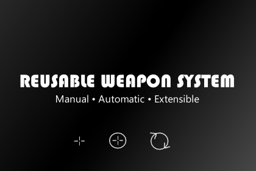
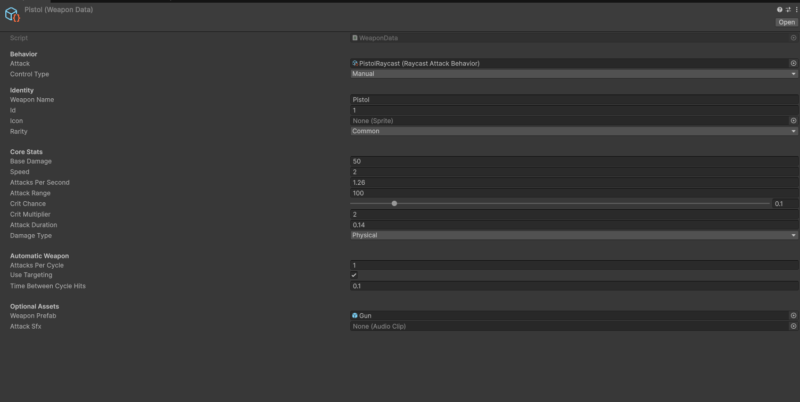
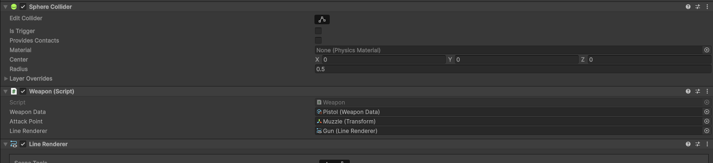
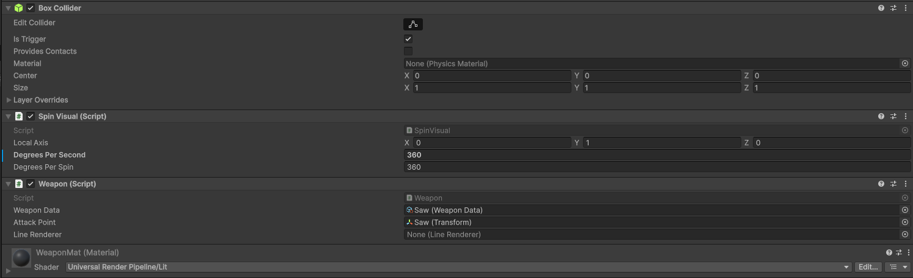

Configurable
Weapon behavior and balance data can be authored without rewriting the core system.
Unity asset · Product development
A modular weapon framework built as a dependable product for other Unity developers, with a clear setup workflow and room for project-specific behavior.

I created the system to support both manual and automatic weapons without locking a developer into a specific input, targeting, inventory, or character setup. The challenge was not simply making a weapon fire; it was defining clean boundaries so the same foundation could be reused across different games.
Weapon behavior and balance data can be authored without rewriting the core system.
Projects can provide their own attack behavior, presentation, and surrounding systems.
Automated Edit Mode and Play Mode tests protect the most important runtime behavior.
I separated configuration, runtime state, attack execution, and presentation. This keeps changes in one area from creating unnecessary dependencies elsewhere.
The weapon layer receives the information it needs but does not own unrelated game systems. That makes integration possible without forcing a full architecture.
ScriptableObject-based data gives developers a readable place to tune identity, damage, timing, range, critical hits, and automatic attack cycles.
Sample content, documentation, inspector-friendly configuration, and predictable defaults were developed alongside the runtime system rather than added afterward.
Two deliberately simple examples demonstrate that different attack styles can share the same weapon foundation without exposing its source code.


Because this was intended for reuse, I tested behavior that could quietly break as the product evolved. Edit Mode tests cover stat calculations, upgrades, cooldown rules, and damage outcomes. Play Mode tests exercise time-dependent automatic weapon cycles in a running Unity environment.
This lets me demonstrate engineering discipline and product reliability without exposing proprietary implementation. A Unity Test Runner result screenshot can be added here later.
These editor views show how a developer connects a weapon and configures its data. They communicate the system’s usability while keeping the underlying source private.



Reusable architecture, data-driven Unity tooling, API boundary design, automated testing, documentation, and the judgment required to turn a working gameplay feature into something another developer can confidently adopt.
The source code and lower-level implementation details are intentionally not published because Reusable Weapon System was developed as a commercial product.